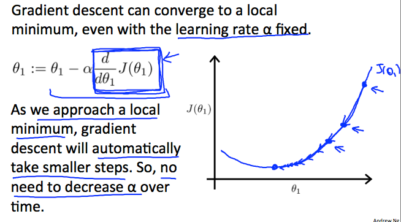

Paramater Learning(参数学习)
1.Gradient Descent(梯度下降)
假定我们有一个hypothesis函数,我们有一个方法测量合适的数据,现在我们需要估计hypothesis函数的参数,这时梯度下降派上用场
假设我们要画出基于θ0和θ1的假设函数(hypothesis)(实际上我们把代价函数绘制为参数估值函数) 我们不是绘制x和y本身，而是我们的假设函数的参数范围和由选择特定参数集所产生的代价
我们把θ0放在x轴上，把θ1放在y轴上，成本函数放在垂直z轴上。 我们的图上的点将是使用具有那些特定θ参数的我们的假设的代价函数的结果。 下图描绘了这样的设置
我们知道，当我们的成本函数在图中的凹坑的最底部时，即当它的值是最小值时，我们已经成功。红色箭头显示图中的最小点。
我们这样做的方式是通过我们的代价函数的导数（一个函数的切线）。切线的斜率是在该点的导数，它将给我们移动的方向。我们在具有最陡下降的方向上逐步降低代价函数。每个步骤的大小由参数α确定，其被称为学习速率。
例如，上图中每个“星”之间的距离表示由我们的参数α确定的步长。较小的α将导致较小的阶跃，较大的α导致较大的阶跃。步进的方向由J（θ0，θ1）的偏导数确定。根据图表上的起始位置，可以在不同的点结束。上图显示了两个不同的起点，分别位于两个不同的地方。
梯度下降算法是：
重复直到收敛：
θj:= θj − α ∂/∂θj J(θ0,θ1)
j = 0,1表示特征索引号。
在每次迭代j时，应该同时更新参数θ1，θ2，…，θn。 在第j次迭代计算另一个参数之前更新特定参数将导致错误的实现
2.Gradient Descent Intuition
在这个视频中，我们探索了一个场景，其中我们使用一个参数θ1，并绘制其代价函数来实现梯度下降。 我们对单个参数的公式是：
重复直到收敛：θ1：=θ1 - α d/dθ1 J(θ1）
无论d/dθ1 J(θ1）的斜率符号如何，θ1最终收敛到其最小值。 下图表示当斜率为负时，θ1的值增加，而当其为正时，θ1的值减小。
另一方面，我们应该调整参数α，以确保梯度下降算法在合理的时间内收敛。 不收敛或太多的时间来获得最小值意味着我们的步长是错误的。
梯度下降如何以固定步长α收敛？
收敛后面的直觉是当我们接近我们的凸函数的底部时，d/dθ1 J(θ1）接近0。 至少，导数将始终为0，因此我们得到:
θ1:=θ1−α∗0
